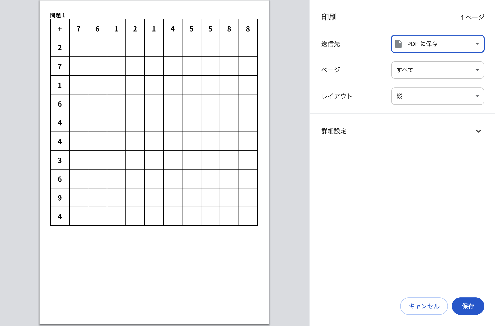
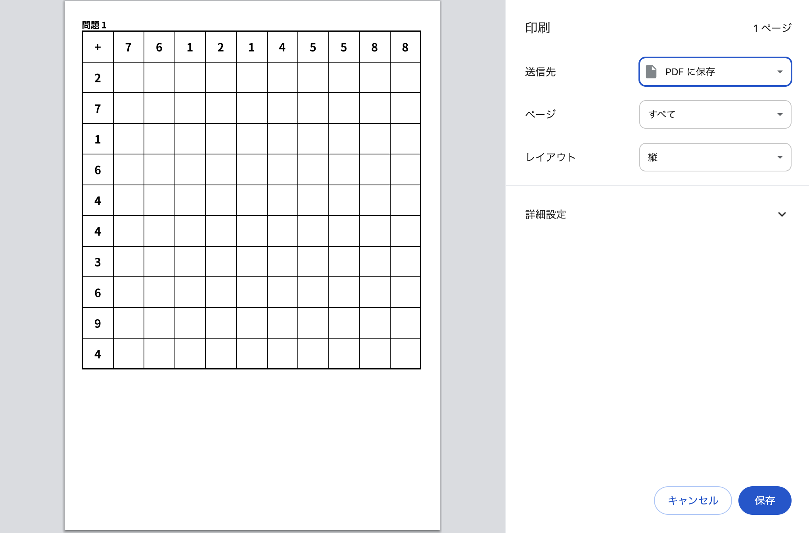

友人からの要望で作成した百マス計算の生成ツールです。問題数を入力し、どの演算子を使用するかを選択した後に、生成ボタンを押すと、問題が生成されます。
生成された問題はA4サイズ印刷に対応していて、印刷することで実際に使用することができます。
URL
https://hundred-calc.vercel.app
担当
デザイン / コーディング
サイトの目的
友人に力添えをする
ターゲット
公務員を目指している友人
デザインについて
MUIを活用してUXの向上を図った。生成が狙いだったので、デザインはシンプルにし、機能性を重視した。
技術スタックは、React, TypeScript, Vercel。